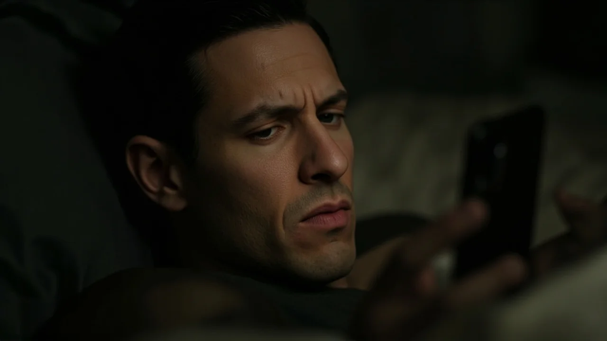
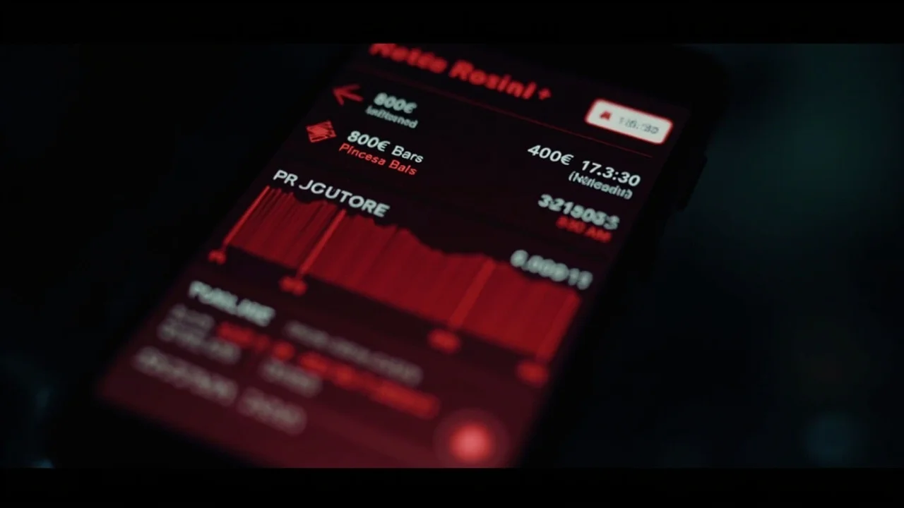
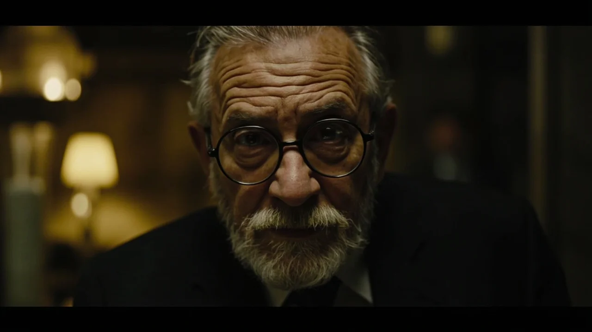
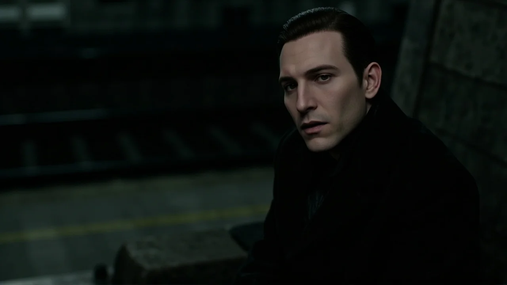
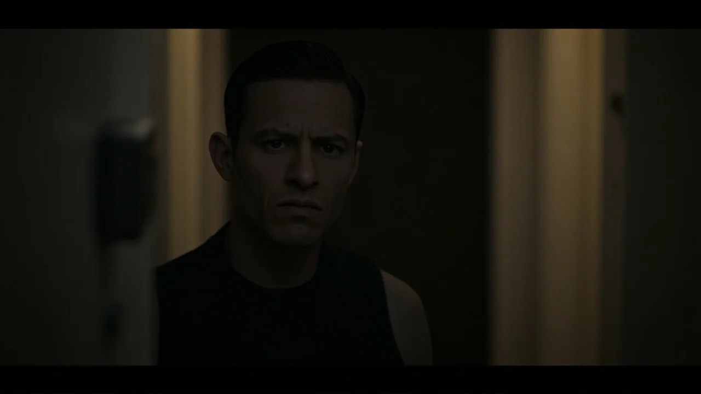

El teléfono vibró sobre la mesilla a las ocho y diez de la mañana con la insistencia de un insecto atrapado en un vaso. Hugo estiró el brazo desde debajo del edredón, tanteó la pantalla y se frotó los párpados pegados de sueño. Tenía nueve llamadas perdidas y una cascada de mensajes.
El primer audio era de Irene:
—Hugo, qué noche la de ayer. Gracias por pagar la última ronda en el ático de Moncloa. Aluciné con la terraza que te sacaste de la manga. Te dejamos las llaves del portal en el bolsillo de la cazadora. Descansa esa resaca.
Hugo se sentó en el borde del colchón con la garganta seca. El suelo de tarima estaba helado bajo sus pies. Miró alrededor: la taza de manzanilla de la víspera seguía junto a los lápices; el ordenador mostraba el último catálogo que había guardado a las once y media antes de acostarse. No había salido de casa en todo el sábado.
Desbloqueó el terminal y abrió la galería compartida del grupo. La primera imagen lo dejó sin aire. Era una azotea iluminada con guirnaldas y el horizonte nocturno de Madrid al fondo. En el centro, sosteniendo una copa de ginebra con la mano izquierda, aparecía él mismo. Llevaba su cazadora de cuero marrón, el jersey verde bosque y la cicatriz blanca partiéndole la ceja izquierda. Sonreía con los ojos entrecerrados mientras abrazaba a Pablo y a Irene. La marca de tiempo marcaba las dos y cuarenta de la madrugada.
Hugo saltó de la cama y abrió el armario. Su cazadora colgaba de la percha, limpia y fría. Metió la mano derecha en el bolsillo exterior: sus dedos rozaron un manojo de llaves con un llavero verde que jamás había visto.
El estudio de diseño olía a café y papel satinado. Irene repasaba unas pruebas de imprenta sobre la mesa de corte. Al oír el portazo alzó la vista con una sonrisa perezosa.
—Vaya cara traes —dijo ella dejando la cuchilla—. Si no aguantas tres copas no te metas a anfitrión. Por cierto, Pablo se fue diciendo que veía las farolas dobles.
Hugo apoyó las palmas sobre la madera y la miró fijamente.
—Irene, escúchame. Yo no estuve en Moncloa anoche. No salí de mi piso desde las siete.
Irene soltó una risa breve que se apagó al ver la rigidez de su mandíbula.

—Venga ya, Hugo. Estuviste allí desde la una. Nos recogiste en el metro y pagaste la cuenta con la aplicación.
—¡Que no era yo! —gritó Hugo, arrojando su móvil sobre el tapete—. Mira el registro. No tengo llamadas salientes.
Irene sacó su teléfono y abrió el chat.
—Me escribiste tú a las dos menos cuarto para decirnos que subiéramos por el montacargas. Mira el número.
Hugo miró la pantalla ajena. El prefijo, los nueve dígitos y la foto de perfil eran suyos. El texto usaba sus giros habituales, sus faltas ortográficas familiares y los mismos emoticonos que solía teclear con prisa.
Con las manos frías, Hugo abrió la aplicación del banco en su móvil. Cuando el balance cargó en cifras rojas, las piernas le temblaron: tres cargos de cuatrocientos euros en un pub de Princesa, una factura de ochocientos cincuenta euros en una joyería y una transferencia inmediata de seis mil euros autorizada a las tres y media.
Bajo la operación figuraba una línea en verde: «Identificación completada mediante reconocimiento biométrico facial y código por mensaje de texto».
—Alguien me ha clonado la tarjeta y la línea —susurró Hugo, retrocediendo hacia la pared—. Vamos a comisaría ahora mismo.
La oficina de denuncias de Chamberí olía a desinfectante y tabaco rancio. Un subinspector de unos cincuenta años escuchó el relato mientras tecleaba con desgana en un monitor cuadrado.
—A ver si lo entiendo —dijo el agente—. Dice que le han clonado el teléfono, pero ese alguien se parece físicamente a usted y los camareros lo reconocen sin dudar.
—No sé cómo lo hace —insistió Hugo—. Estaba durmiendo. Miren las cámaras de mi rellano. Alguien está viviendo por mí.

El subinspector se quitó las gafas y miró a un compañero que aguardaba junto a la puerta. El otro policía asintió y cerró la hoja de madera.
—Señor Morales, hace una hora nos avisaron del banco de la calle Alberto Aguilera. A las cuatro y diez de la madrugada, un individuo forzó un cajero exterior y se llevó siete mil euros antes de que saltara la alarma.
El agente giró la pantalla hacia Hugo y pulsó la reproducción.
La grabación en blanco y negro era nítida. A las 04:10:22, un hombre con una cazadora idéntica a la suya se acercaba al cajero con paso tranquilo. Tecleó cuatro dígitos con soltura y alzó la cabeza hacia la cámara oculta.
A Hugo se le revolvió el estómago. Era su cara. Sus mismos pómulos, su pelo revuelto y la cicatriz cruzando la ceja izquierda. El individuo miró fijo a la lente durante cinco segundos con una media sonrisa fría, sin pestañear una sola vez. Después recogió el dinero y desapareció en la acera.
—Las huellas del teclado coinciden al noventa y nueve por ciento con las suyas, señor Morales —dijo el subinspector levantándose—. Queda retenido.
Irene, sentada al fondo del pasillo, vio cómo le ponían los grilletes. Cuando Hugo la miró pidiendo auxilio, ella apartó la vista hacia el suelo y retrocedió dos pasos.
Siete horas después, el abogado de oficio logró que el juez decretara libertad provisional sin fianza, con entrega de pasaporte y firma semanal. Su teléfono y sus tarjetas quedaron bajo custodia judicial.
Hugo caminó hacia su portal bajo una llovizna gris que calaba el cuero de la cazadora. Se detuvo ante la garita acristalada de don Anselmo, el conserje que llevaba cuatro décadas en la finca.
—Don Anselmo, por favor —rogó Hugo—. Déjeme ver las cámaras del portal del sábado por la noche.
El anciano dudó, pero le abrió la puerta y señaló el monitor de cuatro cuadrantes.

—No sé qué te pasa hoy, Hugo. Esta mañana cuando saliste ni me diste los buenos días.
—¿A qué hora salí el sábado, don Anselmo?
—Sobre las diez menos veinte, como siempre que vas a cenar.
Hugo ajustó la rueda del reproductor hasta las 21:38.
A las 21:40 en punto, el ascensor se abrió. De la cabina salió un hombre con su cazadora, sus vaqueros y su andar elástico. Hizo un gesto seco al conserje y empujó la cancela hacia la calle.
Hugo sintió que el suelo se hundía. A esa hora recordaba estar calentando sopa de fideos en su cocina. Pero al intentar evocar el sabor de la sopa o el color del cazo, tropezó con una mancha blanca, un hueco mudo.
—Ponga la cámara de la acera —pidió Hugo, apoyando las manos en la mesa.
El conserje pulsó dos teclas. La cámara exterior mostraba la calle mojada. El doble cruzó la calzada a las 21:42. Tres minutos después, a las 21:45, la puerta del portal volvió a abrirse y apareció un segundo Hugo, pálido y apresurado, camino de la tienda de ultramarinos.
—Pero bueno... —murmuró don Anselmo—. ¿Tienes un gemelo?
Hugo no contestó. Salir tres minutos después de sí mismo era una anticipación atroz. Aquel ser no imitaba sus pasos: los vivía por adelantado, escribiendo el futuro antes de que llegara. Y la niebla avanzaba en su cabeza. Hugo intentó recordar el nombre de su maestra de primaria y no halló nada. Intentó recordar la voz de su madre llamándolo a comer y solo escuchó un zumbido áspero.
Compró un teléfono desechable en un locutorio de Fuencarral. Al introducir su correo de respaldo, saltó un aviso: «Recarga de abono de transporte completada en Nuevos Ministerios, acceso Castellana».

Eran las diez de la noche. Hugo bajó las escaleras mecánicas hacia los andenes subterráneos. El aire olía a goma quemada y humedad ferrosa. Cruzó los tornos y avanzó por el laberinto de pasillos hacia las vías secundarias.
En el andén tres, sentado en un banco de piedra bajo un cartel apagado, estaba él.
No había nadie más cerca. El impostor vestía una cazadora idéntica pero de un negro mate que absorbía la luz de los tubos fluorescentes. Mantenía las manos sobre las rodillas con una rigidez mineral. No pestañeaba. Su pecho no se movía.
Hugo se detuvo a dos metros, apretando los puños.
—¿Quién eres? —susurró—. ¿Por qué me estás destrozando la vida? Me has quitado a mis amigos, mi trabajo, mi dinero.
El doble alzó la cabeza despacio. Sus ojos miel carecían de brillo húmedo. Habló con la voz exacta de Hugo, limpia y desprovista de emoción:
—No te estoy quitando nada, Hugo. Y no te imito. Crees que soy un usurpador del pasado, pero te equivocas. Soy la versión de ti que todavía no ha nacido.
Hugo negó con la cabeza, asustado.
—Eso es imposible.
—El tiempo solo tolera una presencia a la vez —continuó el doble sin mover un rasgo—. Fui diseñado para ocupar este lugar, pero tú prolongaste tu estancia. Por eso entro despacio. Cada vez que alguien cree en mí, cada vez que Irene confía en mi mensaje o la policía archiva tu culpa, una parte de tu pasado se desprende y pasa a mis manos.
Hugo sintió una punzada detrás de los ojos, como si le arrancaran un cable del cerebro.
—¡Mientes! —gritó, abalanzándose sobre él para prenderlo de las solapas.

Pero sus dedos atravesaron la tela negra sin encontrar resistencia. La figura se deshizo en una corriente de aire gélido y estática, igual que humo barrido por una ráfaga. El banco quedó vacío.
Hugo cayó de rodillas sobre las baldosas. Se sujetó la cabeza mientras un sudor frío le empapaba el cuello. Acababa de olvidar la fecha exacta de su cumpleaños. Sabía que caía en otoño, pero el número y el mes habían desaparecido para siempre.
Caminó dos horas sin rumbo hasta llegar al barrio donde creció. La casa de sus padres llevaba tres años deshabitada. Hugo abrió la cerradura con la llave que aún guardaba en el bolsillo y encendió la luz del pasillo.
Necesitaba una prueba material de que él había existido antes de que la sombra consumiera sus cimientos.
Subió al trastero y bajó una caja carcomida por el polvo. Dentro guardaban álbumes familiares y cintas de vídeo magnéticas. Conectó un reproductor antiguo a un televisor de tubo e introdujo una cinta rotulada con la letra redonda de su madre: «Cumpleaños Hugo, 6 años».
La pantalla zumbó con estática gris antes de encender una imagen granulada.
Era el salón de aquella misma casa, veintidós años atrás. La mesa lucía un mantel de papel, vasos de plástico y una tarta con seis velas. En el centro aparecía él de niño, con jersey azul y el flequillo revuelto, riendo mientras sus padres y sus primos cantaban alrededor.
A Hugo se le saltaron las lágrimas al escuchar la risa clara de su madre. Creyó haber recuperado el anclaje con el mundo.
Entonces la cámara casera comenzó a moverse en un paneo lento hacia la puerta del pasillo, buscando a la abuela que traía una bandeja de refrescos.
A Hugo se le cortó la respiración.
Al fondo del corredor, en la penumbra que se abría junto al marco de madera, había una figura de pie. Era un hombre adulto de veintiocho años, alto, con cazadora negra mate y los brazos caídos. Tenía la cara iluminada por el parpadeo lejano de las seis velas. Era su mismo rostro. Eran sus propios ojos miel, abiertos y fijos en la oscuridad, observando al niño soplar las velas con una paciencia fría.
El impostor no había clonado su teléfono aquella semana. No provenía de una brecha en la red ni de un capricho del azar. Llevaba toda su vida aguardando allí, oculto en los rincones ciegos de su infancia, esperando el momento exacto en que la última persona del mundo dejara de creer en él.
Desde el descansillo de abajo, el timbre de la calle empezó a sonar con un toque largo y pausado.